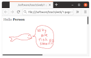

Graphics
Graphic images can be created from shapes such as circles and lines.
Graphics can also be things like pictures.
Graphics - Display Image

Edit the program fields/graphics/1-drawImage.py
Open a terminal move to the "fields/graphics" folder and enter:
$ python3 1-drawImage.py
Things to try
Learn About Steps
Learn About Images
Graphics - Display Comic

Edit the program fields/graphics/2-drawImageComic.py
Open a terminal move to the "fields/graphics" folder and enter:
$ python3 2-drawImageComic.py
Things to try
Draw Simple Shapes
Edit the program fields/graphics/1-drawSimpleShapes.py
Open a terminal move to the "fields/graphics" folder and enter:
python3 3-draw-SimpleShapes.py
Learn About Steps
Things to try
Draw Triangle and Mouse Input

Edit the program fields/graphics/4-drawTriangle.py
Open a terminal move to the "fields/graphics" folder and enter:
python3 4-drawTriangle.py
Learn About Storage
Learn About Values
Things to try
Draw Line
Edit the program fields/graphics/5-drawLine.py
Open a terminal move to the "fields/graphics" folder and enter:
python3 5-drawLine.py
Learn About Flow
Learn About Loops
Things to try
Draw Rectangle
Edit the program fields/graphics/6-drawRectangle.py
Open a terminal move to the "fields/graphics" folder and enter:
python3 6-drawRectangle.py
Learn About Functions
Things to try
Game
The game folder requires installing the "pygame" package.
Airport with Birds
Open a terminal move to the "game" folder and enter:
python3 1-airport.py
Things to try
Learn About Images
Learn About Steps
More Advanced:
Learn About Storage
Learn About Values
Learn About Flow
Learn About Loops
Dolls
Open a terminal move to the "fields/game" folder and enter:
python3 2-dolls.py
Or enter:
python3 5-dolls-scenes.py
python3 6-dolls-scenesObj.py
Things to try
Bugs
Open a terminal move to the "fields/game" folder and enter:
python3 3-bugs.py
Things to try
Learn About Images
Tickle
Open a terminal move to the "fields/game" folder and enter:
python3 4-tickle.py
Learn About Sound
Web
These demos can be run by double clicking on the html file, or by running "sensible-browser"
in a terminal
Display a Comic

Move to the "web" folder and double click on the "1-page.html" file.
To edit the html file from a folder, right click on the html file and
choose an application like "Text Editor" or "Notepad".
$ python3 1-drawImage.py
$ python3 2-drawImageComic.py
python3 3-draw-SimpleShapes.py
python3 4-drawTriangle.py
python3 5-drawLine.py
python3 6-drawRectangle.py
python3 1-airport.py
python3 2-dolls.py
python3 5-dolls-scenes.py
python3 6-dolls-scenesObj.py
python3 3-bugs.py
python3 4-tickle.py